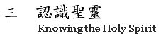

- 1. 聖靈是創造主 (36:31)
- 2. 聖靈是再造主 (34:18)
- 3. 聖靈重生我們 (21:41)
- 4. 聖靈的洗 (33:07)
- 5. 聖靈在我們心中作主 (38:50)
- 6. 被聖靈充滿 (24:49)
- 7. 被聖靈充滿與求聖靈充滿 (27:44)
- 8. 聖靈充滿的表現 (22:37)
- 9. 聖靈澆灌 (38:06)
- 10. 聖靈充滿與說方言(上) (33:55)
- 11. 聖靈充滿與說方言(下) (37:48)
- 12. 防備邪靈(上) (48:33)
- 13. 防備邪靈(下) (46:05)
- 14. 靈界是大戰場 (34:28)